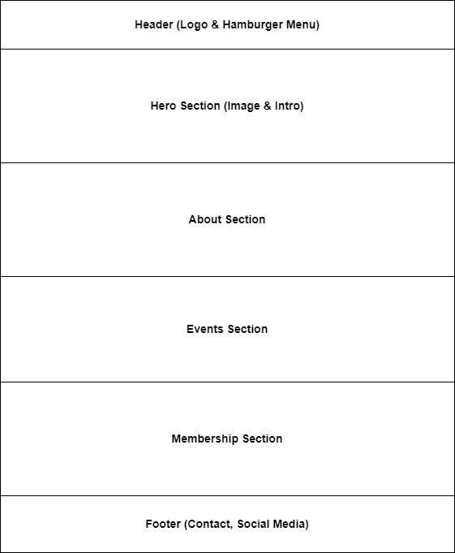

Site Name
Kigo Country Golfing Club
This name reflects a golf club located in Kampala, Uganda, and serves both golf enthusiasts and prospective members.
Site Purpose
The site serves as an informational hub for the Kigo Country Golfing Club, offering details on membership, events, club history, and contact information for prospective and current members.
Scenarios
- How do I become a member of Kigo Country Golfing Club?
- What events are scheduled for the upcoming golf season?
Color Schema
Primary Color: Dark Green (#006400) - Used for headers, navigation bar, and accents.
Secondary Color: Light Beige (#f5f5dc) - Used for the background and body text.
Typography
Heading Font: Roboto Slab - Used for all headings.
Body Font: Open Sans - Used for body text to ensure readability.
Wireframe
Home Page - Mobile View:
Home Page - Desktop View: